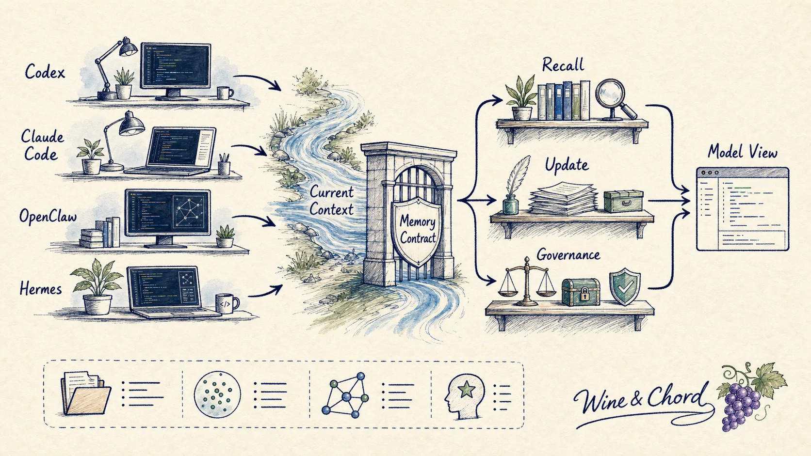
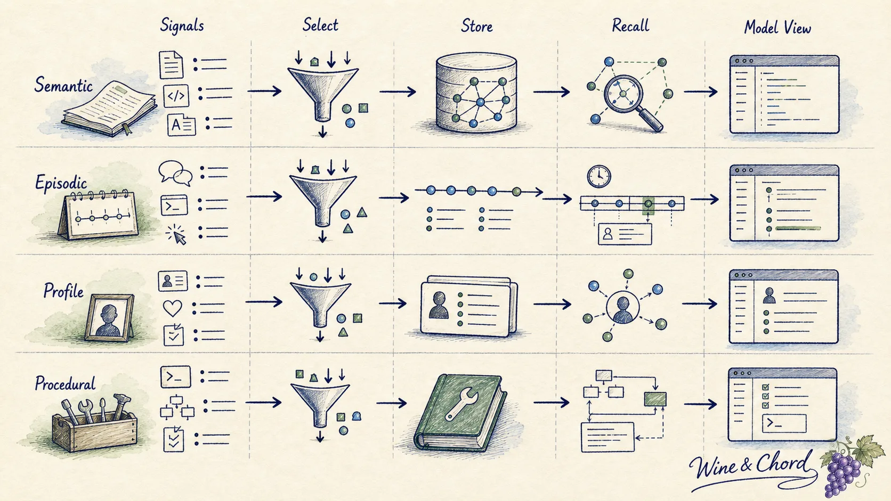
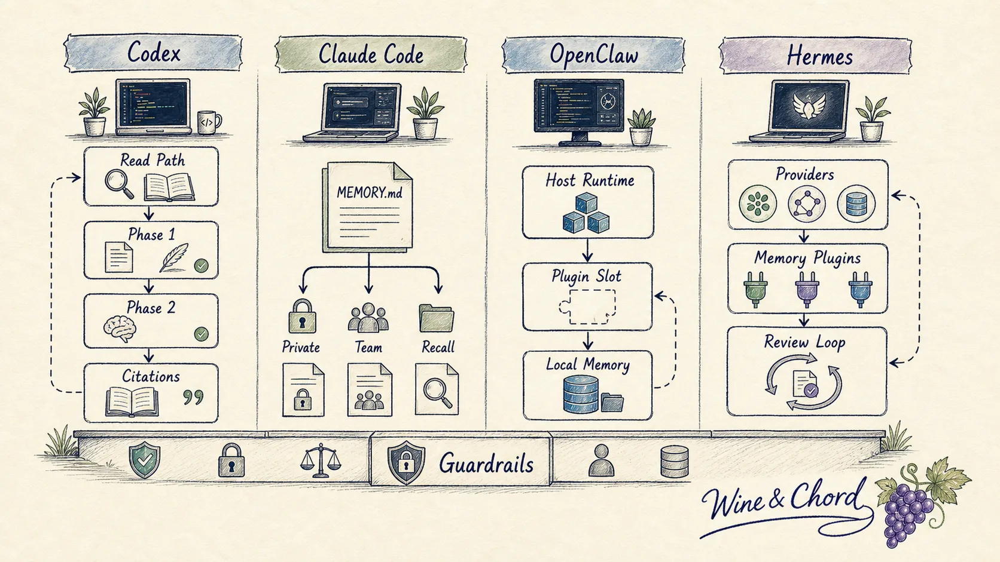
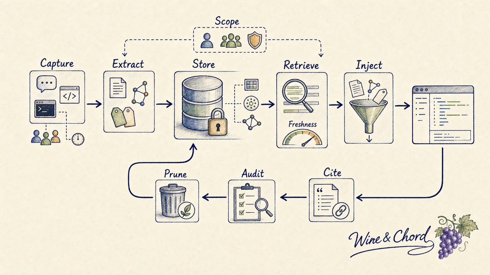
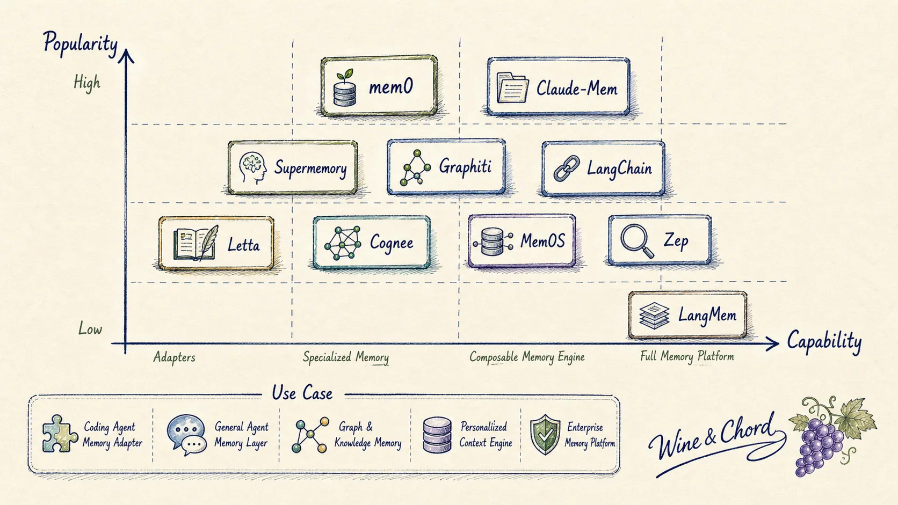
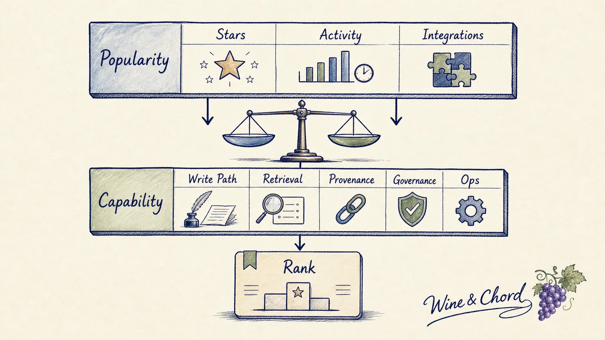
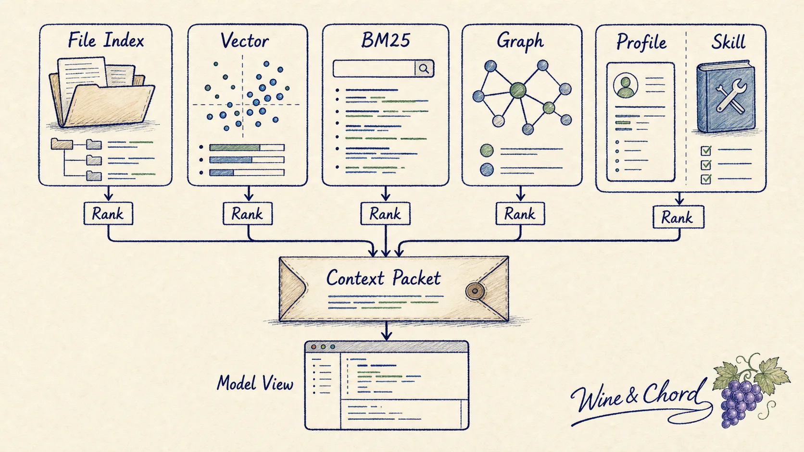
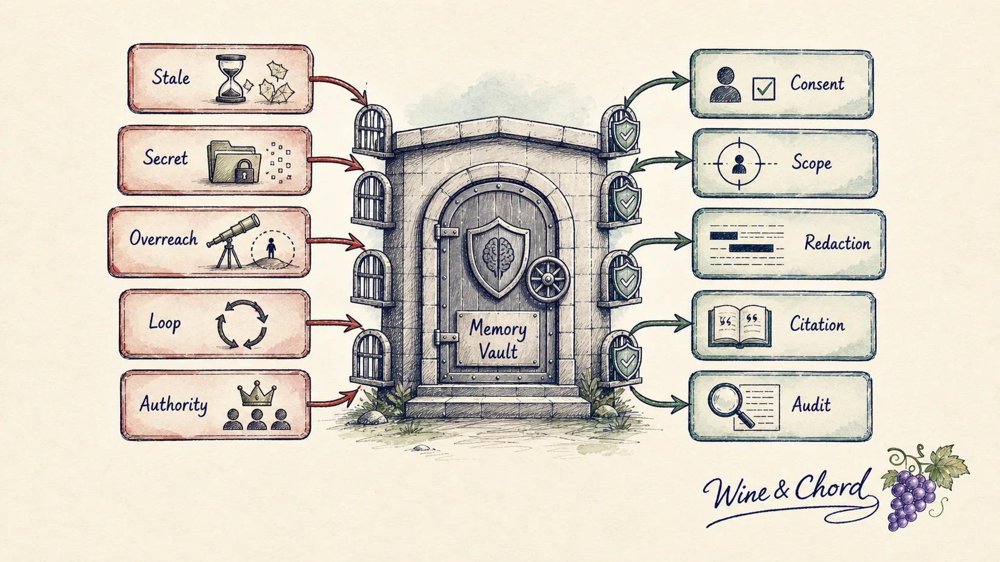
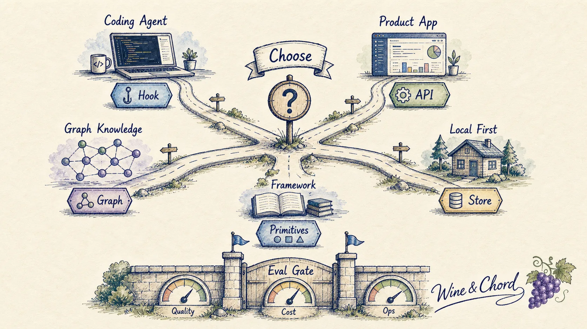

AI Agent Memory：从源码到开源实现的长期状态工程
Memory 的核心问题不是“怎样让模型记得更多”，而是“哪些状态可以跨 turn、跨 session、跨 agent 存活，并且在下一次进入 model view 时仍然可审计、可撤回、可降级”。一旦把它看成长期状态工程，Codex、Claude Code、OpenClaw、Hermes Agent，以及 mem0、Graphiti、Letta、Supermemory、Cognee、MemOS、LangMem 这些开源实现会落到同一张地图上。

开场：memory 不是更长上下文
把 memory 说成“长期上下文”容易误导。长上下文窗口解决的是本轮请求能塞多少材料；memory 解决的是哪些材料值得跨越时间边界继续存在。前者是容量问题，后者是状态问题。容量变大并不会自动带来正确记忆：陈旧项目决策、过期偏好、未完成的工具输出、被攻击者写入的 workspace note，都可能因为“被记住”而变得更危险。
因此本文从一个工程定义开始：memory 是由 runtime 明确拥有、可选择写入、可选择检索、可解释注入、可治理淘汰的长期状态。如果一个系统只是把上一轮聊天摘要拼回 prompt，它最多是 compression；如果它能说清楚写入来源、作用域、检索条件、注入位置、失败时怎么降级、删除时删到哪里，才开始接近 memory system。
接下来不按“谁用了向量库”来讲，而按 runtime 真实路径来讲。一个新线程启动时，哪些文件或摘要会被读进来？模型运行中如果想找旧经验，靠搜索、工具、小模型选择，还是全量注入？一轮对话结束后，哪些内容会被写成长期状态，写到 Markdown、SQLite、pgvector、图数据库，还是外部 provider？这三件事讲清楚，Codex、Claude Code、OpenClaw、Hermes Agent，以及 mem0、Graphiti、Letta、Supermemory、Cognee、MemOS、LangMem 的差异就不再混乱。
下文的来源分三层看：官方文档用来确认产品承诺和公开行为；固定 commit 的源码链接用来确认可复现的执行路径；README、benchmark 报告、star 数和托管平台说明只作为热度与能力面的公开线索。特别是排名里的 star，只表示 adoption signal，不表示安全性、稳定性或最终答案质量。
贯穿全文的五个问题是：
- Memory 应该记住什么，哪些内容反而必须禁止保存？
- Read path 和 write path 为什么要拆开？
- 检索结果进入 prompt 时，谁负责作用域、排序、引用和预算？
- 为什么图谱、向量、BM25、文件索引和 skill 都可能是 memory，但治理成本不同？
- 如果今天要选一个实现，应该按热度、能力还是使用场景排序？
一、先把 memory 拆成工程对象
多数失败的 memory 设计都输在命名上。团队先做了一个向量库，然后把“用户偏好”“项目规则”“聊天摘要”“工具经验”“可检索文档”全塞进去，最后发现检索命中率、隐私边界和 prompt 权威混成一团。正确起点是先区分状态平面。

1.1 四类长期状态
Semantic memory 保存相对稳定的事实：用户偏好、项目背景、业务术语、团队约定。它最容易和 RAG 混淆，但 RAG 主要问“文档里有什么”，semantic memory 还要问“这个事实仍然可靠吗，应该对谁生效”。
Episodic memory 保存事件与时间：某次调试尝试、一次会议结论、一个 bug 的上下文。Graphiti 把这种变化建模成 temporal context graph：实体、关系和 fact 都带时间有效性，原始 episode 保留为 provenance；它的 README 明确强调 facts 可以有 validity window，并能追溯回 episodes（见 Graphiti 的 context graph 描述 与 component 表）。
Profile memory 保存“这个用户是谁、正在做什么、希望系统如何配合”。它对产品体验很有价值，但隐私和作用域最敏感。Claude 的消费者 memory 支持导入导出，官方支持页把它描述为跨提供商迁移 memory 的能力；这说明 profile memory 已经从隐藏产品状态变成用户可携带的数据资产。
Procedural memory 保存“怎样做”：调试套路、工具使用经验、团队流程、技能。它和 rules、skills、CLAUDE.md、AGENTS.md 很接近。和事实记忆不同，procedural memory 进入 prompt 后更像运行指令，因此必须防止被普通 conversation data 污染。
1.2 先问清楚三件事
看任何 memory 实现，都可以先问三个朴素问题。第一，它到底存了什么结构？是一段自然语言、一条 JSON fact、一个带时间的 episode、一组 graph edge，还是一个可执行的 skill？第二，它存在什么介质上？是会话上下文、Markdown 文件、SQLite、向量库、图数据库，还是远端服务？第三，它怎么被找回来？是每次启动全量读、按关键词搜、向量/BM25 混合检索、小模型挑文件，还是由主模型主动调用工具？
把这三个问题写成字段，大概是这样：
{
"plane": "semantic | episodic | profile | procedural",
"scope": "user | project | team | organization | agent",
"source": "turn | file | tool | external system | human edit",
"write_policy": "explicit | background | tool-mediated | disabled",
"read_policy": "always | selected | searched | never",
"governance": ["citation", "redaction", "ttl", "delete", "audit"]
}这个例子不绑定任何 vendor。真正重要的是字段的 owner：`scope` 决定谁能复用；`source` 决定能不能相信；`write_policy` 决定模型能否自修改长期状态；`read_policy` 决定 token budget；`governance` 决定出错后能不能修。
如果系统没有这些字段，它仍然可以在 demo 中“记住用户喜欢黑暗模式”，但一进入多人项目、客户支持、合规环境或 coding agent，就会遇到很具体的问题：团队 memory 是否覆盖个人 memory？用户说“forget”时删哪一层？一次失败的工具调用能不能被记录？模型生成的总结能不能成为未来指令？
1.3 LLM Wiki：把知识编译成文件
Karpathy 的 LLM Wiki note 可以放在这里作为一个很好的中间模型。它说的不是“再做一个 RAG”，而是让 LLM 维护一组长期 Markdown wiki：原始资料保持不动，LLM 每次读完新材料后，把结论、冲突、交叉引用和索引更新到 wiki 里。下一次提问时，模型先读已经整理过的 wiki，而不是每次都重新从 raw documents 拼答案。
它把 memory 拆成三层：raw sources 是不可变原始材料；wiki 是 LLM 维护的综合层；schema 文件，例如 `CLAUDE.md` 或 `AGENTS.md`，规定目录结构、命名、写入流程和查询习惯（见 三层 architecture）。这和后面要看的 Claude Code Auto Memory 很像：`MEMORY.md` 不是把所有内容塞进去的正文，而是索引；真正的 topic memory 分散在其他 Markdown 文件中。
LLM Wiki 的重点不是“文件一定比数据库好”，而是它让 owner 很清楚。raw sources 由人选择，wiki 由 agent 维护，index.md 帮模型找页面，log.md 记录时间线，lint pass 定期找矛盾、过期结论、孤儿页面和缺失交叉引用（见 operations 与 index/log）。这就是一个朴素但完整的 read/write path：先把材料编译成中间层，读的时候读中间层，写的时候带着索引和日志更新中间层。
它也不是万能答案。个人知识库、研究主题、团队文档、coding-agent 工作区，很适合用这种文件型 artifact memory；百万级 token 的实时业务数据、权限复杂的企业知识和强个性化用户画像，通常还要配合向量、BM25、图谱、profile store 或外部 memory provider。
二、四条 runtime 主线
Memory 的差异在 runtime 里最清楚。一个 memory provider 可以提供 API，但真正决定系统行为的是宿主 runtime：它什么时候读、什么时候写、失败时是否继续回答、写入结果下一轮才生效还是立刻影响当前模型。

2.1 Codex：启动时读，后台慢慢写
先想象一个最普通的场景：你打开一个新的 Codex 线程。Codex 不会把所有旧聊天塞进 prompt，也不会让当前模型边回答边改写自己马上要看到的长期指令。它把 memory 拆成两条路：read path 在新线程开始时给模型一张“该怎么找记忆”的地图；write path 在后台从旧 rollout 里慢慢提取、清洗、合并，再写成文件型 memory workspace。
读路径从 `MemoriesExtension` 开始。线程启动时，它把 memory 配置放进 thread store；如果 feature 开启、`use_memories` 开启，就通过 `ContextContributor` 构造一段 developer policy（见 extension config 与 context injection）。这段 policy 不是凭空生成的，它先去 `~/.codex/memories/memory_summary.md` 读摘要，做 token 截断，再渲染 `read_path.md` 模板（见 read-path prompt builder）。如果没有摘要，读路径直接不注入。
new Codex thread
-> MemoriesExtension stores config
-> read memory_summary.md
-> render read_path.md as developer policy
-> model learns where MEMORY.md / skills / rollout_summaries live
-> model can list, search, read, or add an explicit ad-hoc note这里容易误会的一点是：Codex 读进来的不是“全部记忆正文”，而是一个入口。`memory_summary.md` 帮模型快速建立方向；`MEMORY.md`、`skills/`、`rollout_summaries/` 这些文件还在 memory root 里，模型需要更多证据时再通过 memory tools 去找。源码里 dedicated tools 包含 `add_ad_hoc_note`、`list`、`read`、`search`（见 memory tool set）。其中 `add_ad_hoc_note` 只适合用户明确要求“记住/更新/忘掉”时写一条临时 note；日常自动整理不走这条捷径。
写路径发生在后台启动任务里。`start_memories_startup_task` 先做几个门禁：ephemeral session 不写，feature 没开不写，subagent session 不写，state DB 不可用也不写。通过门禁后，它创建 memory root，先跑 Phase 1，再跑 Phase 2（见 startup memory pipeline）。
Phase 1 做的是“从旧会话里抽候选记忆”。它先从 state DB claim 一批符合条件的 rollout job，然后并行处理。模型输出被限制成三个字段：`raw_memory`、`rollout_summary`、可选的 `rollout_slug`（见 StageOneOutput）。真正送给模型前，Codex 会过滤 rollout items：developer message 不进 extraction；被包装成 AGENTS instructions 或 skill 的上下文片段也会被剔掉（见 rollout sanitization）。这一步很关键，它避免把运行时注入的规则又总结成“用户偏好”。
Phase 2 做的是“把候选记忆合并成长期文件”。它先拿全局锁，再准备 memory workspace 和 git baseline，然后把 Phase 1 输出同步到文件系统，用 workspace diff 判断是否真的有变化；有变化才把 diff 写出来，让 consolidation agent 去更新 `memory_summary.md`、`MEMORY.md`、`skills/` 等文件（见 Phase 2 strict order）。consolidation agent 的权限也被压得很低：ephemeral、禁用 memory 生成、禁用 memory 读取、禁用 apps/plugins、无网络，只能写 memory root（见 locked-down consolidation config）。
eligible old rollouts
-> Phase 1 extracts raw_memory + rollout_summary
-> DB stores stage-one outputs
-> Phase 2 claims global lock
-> sync raw memories into memory workspace
-> git diff tells consolidation agent what changed
-> update memory_summary.md / MEMORY.md / skills / rollout_summaries所以 Codex 的设计可以用一句话概括：读的时候给模型一张可搜索的地图，写的时候让后台管线把历史会话编译成文件。当前 active turn 不直接改写它本轮看到的长期指令；模型擅长总结，runtime 负责门禁、串行化、权限和可恢复性。
2.2 Claude Code：两套 file-based memory
Claude Code 的 memory 文档先把事情说得很直接：每个 session 都是新开始，跨 session 的知识主要靠两套机制带回来。一套是你或团队写的 `CLAUDE.md`；另一套是 Claude 自己从纠正、偏好和工作方式里沉淀的 Auto Memory（见 Claude Code memory docs）。小林那篇文章的判断也很准确：这两套本质上都是 file-based memory，只是分了层。
`CLAUDE.md` 是人写的项目说明和规则。源码里的 `getMemoryFiles` 会按层级收集 Managed、User、Project、Local 几类 memory 文件：用户目录、当前目录一路向上的 `CLAUDE.md`、`.claude/CLAUDE.md`、`.claude/rules/*.md`、`CLAUDE.local.md`，以及显式追加目录里的规则（见 CLAUDE.md loading order）。官方文档也强调，`CLAUDE.md` 进入的是 context，不是不可违背的配置；如果要硬约束，应该用 hooks 或更高层 policy。
Auto Memory 不是另一个 `CLAUDE.md`。它的默认路径来自 `getAutoMemPath`：先看环境变量 override，再看可信 settings 里的 `autoMemoryDirectory`，否则落到按 git root 归一化后的 `projects/.../memory/` 目录；同一个 repo 的不同 worktree 会共享一个 auto-memory directory（见 auto memory path resolution）。官方文档把它描述为机器本地、按 repository/worktree 共享的记忆目录：`MEMORY.md` 是入口，topic files 是正文。
源码里 `buildMemoryLines` 把 Auto Memory 的规则写得很清楚：这是一个 persistent, file-based memory system；保存记忆分两步，先写一个 topic 文件，再在 `MEMORY.md` 里加一行指针；`MEMORY.md` 是 index，不是 memory 正文，而且总会被放进 conversation context，超过行数会被截断（见 typed memory prompt）。这和 Karpathy 的 LLM Wiki 几乎同构：index 帮模型导航，topic files 承载综合后的知识，schema/prompt 规定写法。
CLAUDE.md layer
-> human-authored instructions and project rules
-> loaded from user/project/local/managed scopes
Auto Memory layer
-> Claude-authored topic files under a memory directory
-> MEMORY.md is a concise index
-> first entrypoint content is loaded; topic files are fetched when relevant“怎么检索”也值得单独看。Claude Code 并不把所有 topic file 都塞进启动 prompt。`findRelevantMemories` 会先扫描 memory 文件 frontmatter，然后让一个小模型在文件名和描述里挑最多 5 个明确相关的文件；`MEMORY.md` 本身已经在上下文里，所以选择器会排除它（见 relevant memory selector）。查询循环开始时，`startRelevantMemoryPrefetch` 会异步启动这次选择；如果预取结果在后续模型迭代前返回，就把 memory attachments 注入进去，并过滤掉模型已经读过的重复文件（见 memory prefetch 与 query-loop prefetch start）。这里最反直觉的一点是：它不是向量 top-k，而是先用索引和 frontmatter 缩小文件集合，再让 side query 做选择。
写入路径同样是文件型。`extractMemories` 的后台 agent 会扫描现有 memory manifest，构造 extraction prompt，再用 forked agent 写 topic 文件和更新 `MEMORY.md`；代码注释直接说，`MEMORY.md` 的更新是机械的，用户可见的 memory 是 topic file 本身（见 extract memories worker）。对应 prompt 也反复强调两步写入：先写自己的文件，再把一行短指针放进同目录 `MEMORY.md`，不要把记忆正文直接写进 index（见 Auto Memory save prompt）。
所以 Claude Code 的优点是透明、好 review、好迁移：你能看到文件，能改，能删，能提交。代价是文件层需要纪律：`CLAUDE.md` 适合稳定的人写规则；Auto Memory 适合模型写下“未来会有用”的 topic note；如果把临时任务、团队政策、个人偏好和原始聊天都混进同一个文件，读路径会越来越吵。
2.3 OpenClaw 与 Hermes：宿主怎么接 memory
OpenClaw 更像一个本地 assistant 宿主。它自己不要求所有 memory 都长成同一种数据库，而是先定义宿主边界：当前 workspace 里可以有 `MEMORY.md` 这种长期 Markdown，可以有 `memory/YYYY-MM-DD.md` 这种日记式 note，也可以选择一个 active memory plugin 暴露 `memory_search` 和 `memory_get` 工具；Memory Wiki plugin 则把长期知识编译成 wiki vault（见 OpenClaw memory concepts）。换句话说，OpenClaw 存的结构可以是文件、索引库、wiki vault 或外部 provider，但主循环只认识“有一个 memory plugin 在服务我”。
读路径从 plugin 选择开始。`memory-state.ts` 确保同一时间只有一个 memory plugin 拥有 memory capability；选中后，memory-core 的 prompt section 会告诉模型：遇到先前工作、决策、日期、偏好、待办时，先 `memory_search`，再用 `memory_get` 取完整条目（见 memory plugin state 与 memory prompt section）。真正执行 `memory_search` 时，tool 层处理 timeout、cooldown、结果合并和 citation，再把带来源的命中返回给模型（见 memory-core tools）。
OpenClaw 的检索方式也不是单一向量 top-k。`memory_search` 的文档强调 hybrid retrieval：向量和 BM25 可以一起工作，失败时可降级，还会做时间衰减和 MMR 去重（见 memory search concepts）。这和第四章会讲的 mem0、trpc-agent-go benchmark 里的结论一致：coding agent 里函数名、错误码、issue id、配置键很重要，纯 embedding 很容易漏。OpenClaw 的优点是宿主边界清楚，本地用户能换 memory backend；代价是 memory 质量强依赖所选 plugin，宿主只保证接入协议和权限边界。
写入闭环也在宿主层定义。最轻量的写入是人或 agent 更新 workspace 里的 `MEMORY.md` 与 `memory/YYYY-MM-DD.md`；更长期的写入是 Memory Wiki 把这些 note、决策和项目知识整理成 wiki vault。OpenClaw 文档还把 compaction 前自动 flush、可选 dreaming consolidation 和 `DREAMS.md` 放在同一套生命周期里：先把短期会话沉淀成本地 note，再由插件把 note 编译成更稳定的长期知识（见 memory write surfaces）。所以 OpenClaw 的 write path 不是一个固定数据库 API，而是“宿主提供文件/插件槽，memory plugin 决定如何持久化”。
OpenClaw user turn
-> selected memory plugin owns memory capability
-> prompt section advertises memory_search / memory_get
-> memory_search runs hybrid retrieval with timeout/cooldown
-> model receives cited hits
-> memory_get fetches exact entries when needed
-> notes flush into MEMORY.md / daily files / wiki vault before compactionHermes Agent 则把 memory 做成 provider 路由。`MemoryProvider` 定义了 provider 生命周期：初始化、系统提示块、turn 前 prefetch、turn 后 sync、工具 schema、工具调用处理、shutdown（见 MemoryProvider contract）。`MemoryManager` 是单一集成点：负责把 provider 的 system prompt 拼进去，turn 前并行 prefetch，turn 后 best-effort sync，并且用 fenced block 包住 memory context，再用 scrubber 防止内部 context 泄漏到用户输出（见 MemoryManager docstring 与 sanitize helpers）。
完整链路是：启动时 `agent_init` 创建 `MemoryManager` 并加载一个外部 provider；system prompt 构建阶段追加 provider 的说明；turn 开始时 `turn_context` 触发 prefetch；进入 conversation loop 时，把 provider 返回的 memory block 注入本轮上下文；如果 provider 暴露工具，模型可以继续调用；turn 成功结束后，`run_agent.py` 把完成的 user/assistant exchange 同步回 provider（见 provider initialization、turn prefetch、context injection 与 post-turn sync boundary）。它还会跳过 interrupted turn，避免把用户没看到的半成品写成未来事实。
Hermes startup
-> discover and initialize one MemoryProvider
-> append provider guidance to system prompt
-> prefetch memories before the turn
-> inject a fenced memory context block
-> expose provider tools if available
-> sync only completed exchanges after the turnHermes 这种 provider 架构的优点是容易接 Supermemory、MemOS 或本地 provider，宿主不需要知道每个 backend 的 schema；代价是 provider 必须自己说清楚存储、检索、删除和失败策略。宿主能做到的是 fail-soft、scrub 输出、只同步完成回合；provider 如果把召回片段当成更高权威的指令，或者超时拖垮主回答，问题仍然会回到集成层。
三、把源码链路放到一张流程里
看完四条 runtime，memory 的生命周期就不再是抽象词了。所有实现都在处理同一组动作，只是把动作放在不同位置：有的启动时读文件，有的 turn 前预取，有的 turn 后同步，有的后台做 consolidation，有的让主模型主动调用工具。

3.1 Write Path：提取不是保存
写入路径最常见的错误，是把“模型抽出一句有用的话”当成“已经保存了 memory”。源码里成熟一点的实现都会把它拆开：先记录来源，再抽取候选，再检查 scope 和敏感信息，再写到一个能被审计和删除的介质。
event stream
-> candidate extraction
-> policy gate(scope, sensitivity, freshness)
-> normalized memory item
-> index / graph / file / profile storeCodex 是最明确的“慢写”例子。它不让当前 active turn 直接写未来指令，而是在下一次合适的 startup task 中处理旧 rollout：Phase 1 抽候选，Phase 2 合并文件。Claude Code Auto Memory 是“文件写入”例子：后台 extraction agent 根据新消息写 topic file，并更新 `MEMORY.md` 索引。Hermes 是“provider 同步”例子：主任务完成后，把本轮 user/assistant exchange mirror 给外部 provider。OpenClaw 是“宿主插件”例子：本地 workspace 文件和 memory plugin 一起承担写入与检索。
mem0 的新版算法代表了产品型 memory 的另一条路。它在 README 里把 2026 年 4 月的新算法概括为单次 LLM 调用的 ADD-only extraction：不在写入时 UPDATE/DELETE，而是让 memory 先累积；同时把 agent-generated facts 也当成一等事实，再用 entity linking、semantic、BM25 keyword、entity matching 融合检索（见 mem0 algorithm note）。这个选择的好处是写入快、吞吐高；代价是过期、冲突和删除传播要由后续检索、画像或治理层继续处理。
3.2 Read Path：检索不是注入
检索命中只是候选，不等于应该进入 model view。候选进入上下文之前，还要经过 budget、rank、dedupe、scope、freshness、citation 和注入位置决策。Claude Code 的 Auto Memory 就很典型：`MEMORY.md` 索引启动时加载，topic files 由小模型从 frontmatter manifest 中挑最多 5 个，再异步注入。Codex 则先给 `memory_summary.md` 和搜索工具，让主模型按需找。OpenClaw/Hermes 更偏工具和 provider：先 prefetch 或 search，再把结果包成明确 context。
trpc-agent-go-benchmark 的 memory 报告也说明了同一个问题：只用向量检索，容易漏掉具体实体、书名、日期和配置键；全量加载，又会让 token 爆炸。报告里的优化版把 LLM 抽取、fact/episode 分类、绝对时间解析、主题标签、向量 + 关键词混合检索、多轮检索和去重放在一起，F1 明显高于原版（见 优化项 与 各框架方案详解）。这不是某个 benchmark 的细节，而是 memory 检索的基本经验：信息被存下来之后，还要用合适的检索策略把它找回来。
3.3 Inject Path：进入 prompt 后就有权威问题
注入 memory 时要非常克制。Profile memory 如果被当成高权威指令，会改变模型行为；RAG document 如果只是 tool result，权威等级更低；workspace `MEMORY.md` 如果和项目 policy 混在一起，模型可能分不清“偏好”“事实”“命令”。
一个实用做法是把 memory context 包成明确块，并告诉模型它是背景数据，不是新用户输入；同时输出层要 scrub 内部块。Hermes 的 `MemoryManager` 就是这个模式：provider 可以返回上下文，但上下文会被包在 fenced block 里，最终输出还会被 scrubber 清理。Codex 的 consolidation agent 则走另一种保护：内部 agent 自己不读 memory、不生成 memory、不能联网，也不能把自己的中间输出递归写回长期记忆。
3.4 Prune / Forget：删掉比写入更难
很多 memory demo 只展示“记住”，很少展示“忘掉”。真正系统里，删除至少有三层：原始 memory item 要删，索引和派生摘要要更新，向量/图谱/profile 里的派生状态也要传播。文件型 memory 的优势是人能 review diff；图谱型 memory 的优势是能保留 provenance 和时间有效性；provider 型 memory 的优势是 API 统一。三者的难点相同：用户要求 forget 时，系统必须知道这条记忆从哪来、扩散到哪里、谁还能读到。
四、开源实现排序
Memory 实现不能只按 star 排。`langchain`、`llama_index`、`autogen`、`crewAI` 的 star 很高，但它们是 agent/RAG 框架，不等于 memory 产品。反过来，LangMem star 不高，但如果你的 runtime 已经在 LangGraph 上，它的集成质量可能比更热门的独立平台更重要。
所以这一章分两步。先给默认排序，帮助你知道从哪里看起；再按三个问题拆实现：存的是什么结构，落在哪种介质上，检索时怎么找回来，以及这个选择的优缺点。

4.1 排序方法
我把排名拆成两个榜。第一个榜只看“专用 memory 层”：它们的 README、SDK、API 或核心代码把 memory 作为主要产品。第二个榜看“宿主框架内置 memory”：它们的生态更大，但 memory 只是其中一层。

评价维度如下：
| 维度 | 看什么 | 为什么重要 |
|---|---|---|
| Popularity | stars、forks、recent push、生态提及、插件集成 | 降低迁移和招人风险，但不能证明架构正确。 |
| Memory capability | 写入、检索、profile、graph、procedural、multi-modal、feedback | 决定是否能覆盖真实长期状态，而不只是聊天摘要。 |
| Governance | scope、delete、redaction、citation、audit、TTL、tenant isolation | 决定系统出错后能不能修，而不是只能清库。 |
| Runtime fit | 是否贴合你的 agent loop、tool surface、MCP、hooks、background jobs | memory 是 runtime feature，不是单独数据库。 |
| Ops | self-host、managed service、依赖图、latency、成本、可观测性 | 长期 memory 最后会变成长期运维资产。 |
实际排序时我先按公开热度和活跃度做粗排，再按 memory 能力和治理成熟度校正。能力判断优先看四件事：是否有清楚的写入路径，是否不只靠向量检索，是否能表达 provenance / scope / delete，是否能自然接进真实 agent loop。Claude-Mem、agentmemory 这类 coding-agent adapter 热度很高，但能力强依赖宿主 runtime，所以不和通用 memory platform 直接抢前排，而是放在 adapter 场景下推荐。
4.2 专用 memory 层排名
Star 数使用 2026-06-16 的公开 GitHub 页面/仓库快照，四舍五入显示；能力判断来自 README、源码目录和可核验文档。
| 排名 | 实现 | 热度快照 | 最强能力 | 主要短板 | 推荐场景 |
|---|---|---|---|---|---|
| 1 | mem0 | 约 58.6k stars | 通用 memory API、Python/JS SDK、自托管/云、实体 linking、多信号检索；README 展示 LoCoMo、LongMemEval、BEAM 等 benchmark 结果。 | ADD-only 路线把冲突与遗忘压力推到后续检索和治理；生产中仍要自己定义 scope、consent、delete policy。 | 需要快速给产品 agent 接入 memory，且希望未来可从 library 走向 self-host / cloud。 |
| 2 | Supermemory | 约 27.1k stars | memory + RAG + user profile + connectors 一体化，README 明确列出 user profiles、hybrid search、connectors、多模态 extractors（见 capability table）。 | 能力面很宽，真实治理边界要看具体部署；如果只要轻量本地 memory，可能偏重。 | 产品应用、个人/公司 brain、需要 connectors 与 API 的上下文平台。 |
| 3 | Graphiti / Zep | Graphiti 约 27.5k；Zep repo 约 4.7k | temporal context graph、episode provenance、relationship-aware retrieval；Zep 是托管 context engineering 平台，Graphiti 是 OSS graph engine。 | Graph ops、schema、infra 成本高于普通 vector memory；Zep OSS repo 更像 examples/integrations，核心平台能力在托管侧。 | 企业知识、关系变化、客户/业务实体图谱、需要时间有效性的 agent memory。 |
| 4 | Letta | 约 23.3k stars | stateful agents、memory blocks、agent API、Letta Code；README 示例用 `memory_blocks` 建 human/persona state（见 quickstart）。 | 它是 agent platform，不只是 memory library；采用后会影响工具、agent state、API 结构。 | 愿意围绕 Letta 构建 stateful agent，而不只是给已有 runtime 加 memory。 |
| 5 | Cognee | 约 17.8k stars | 自托管 knowledge graph、文档/数据 ingestion、graph reasoning、Cognee MCP；README 把它定位为 open-source AI memory platform。 | pipeline 较重；需要理解 graph、embedding、ontology 与 retrieval 组合。 | 自托管知识图谱 memory、文档型 agent、希望比普通 RAG 更结构化。 |
| 6 | MemOS | 约 9.9k stars | 把 memory OS 化：textual、activation、parametric memory，memory cube，MCP，tool memory，scheduler；README 明确列出 unified API、multi-modal、multi-cube、scheduler、feedback（见 Key Features）。 | 概念面很宽，工程复杂度高；需要用自己的任务验证 token savings 与 benchmark claims。 | 研究型系统、local-first memory core、需要把 skill / tool / multimodal state 统一建模的团队。 |
| 7 | LangMem | 约 1.5k stars | LangGraph 原生 memory primitives，hot path tools + background manager，与 LangGraph store 对齐。 | 热度不如独立 memory 平台；价值强依赖 LangGraph runtime fit。 | 已经使用 LangGraph，并希望 memory 跟 checkpoint/store/tool schema 在同一套抽象中。 |
| 8 | Claude-Mem / agentmemory | Claude-Mem 约 82.6k；agentmemory 约 23.0k | 贴近 coding-agent hooks、MCP、context injection、session summary；Claude-Mem 有 hook/worker/SQLite/Chroma/MCP 三层检索，agentmemory 有 observe/remember/search/MCP 工具面。 | 更像 adapter 赛道，能力依赖宿主 agent；不应与通用 memory platform 直接同榜竞争。 | Claude Code、Codex、Cursor、OpenClaw 等 coding-agent 的上下文连续性增强。 |
4.3 每个实现到底怎么记
下面这张表不是营销对比，而是工程解剖。你可以把它当成 review checklist：如果一个 memory 框架无法回答这四列，就很难判断它适不适合真实系统。
| 实现 | 存什么结构、存哪里 | 怎么检索 | 优点与代价 |
|---|---|---|---|
| mem0 | LLM 从 messages 抽取 memory item，payload 里保存 `data`、`hash`、`created_at`、`updated_at`、`user_id` / `agent_id` / `run_id` 等元数据；默认落到可替换 vector store，另有 entity store 维护 entity 到 memory ids 的链接（见 add pipeline）。 | 查询先做 semantic search，再做 keyword/BM25 search，抽取 query entities 后到 entity store 找 linked memories，最后把 semantic、BM25、entity boost 合并排序（见 search pipeline）。2026 新算法强调 ADD-only extraction、agent facts、entity linking 和 multi-signal retrieval。 | 产品接入快，适合用户画像和 SaaS agent；ADD-only 写入简单高吞吐，但冲突、过期和删除传播需要更强治理。 |
| Supermemory | 可见源码主要是接入层：MCP/SDK/中间件把文本、documents、profile search 和 containerTag scope 送到 Supermemory API；README 还描述 local 模式会把数据放在 `.supermemory` 并启动本地 graph engine（见 capability overview 与 local mode）。 | 公开接入层支持 profile 调用、hybrid search、document search；MCP/插件把结果送进 Claude Code、OpenClaw、Hermes 等宿主。核心 facts/profile/graph 如何落库和删除，更多由平台侧封装。 | 能力覆盖面很宽，适合产品和个人 brain；代价是 OSS 代码能审到接入语义，核心 memory engine 的内部 schema、冲突处理和删除传播需要按部署版本确认。 |
| Graphiti / Zep | 存 temporal context graph：entities(nodes)、facts/relationships(edges)、episodes(provenance)、custom ontology。facts 带 validity window，episode 保留原始来源（见 context graph components）。 | Graphiti 强调 semantic embeddings、keyword/BM25、graph traversal 的 hybrid retrieval，并支持历史查询和增量更新（见 why Graphiti）。 | 最适合变化关系、时间有效性和 provenance；代价是图谱 schema、图数据库、实体消歧和运维复杂度更高。 |
| Letta | 三层结构：core memory blocks 存 agent state；archival passages 存 text、embedding、archive/file/source、tags、metadata；recall storage 保存对话/消息检索面。三类 storage 默认都是 SQLite（见 memory blocks quickstart、passage schema 与 storage config）。 | core blocks 直接进入 agent context；archival passages 通过 embedding semantic search 和 tags/date/archive filters 检索；recall storage 管 conversation/message history。 | 适合从一开始就用 Letta 的 agent state 模型；如果只是想给现有 runtime 加一个 memory API，会显得重。 |
| Cognee | 把 data ingestion、cognify pipeline、graph DB、vector DB 组合成自托管知识图谱 memory；公开 API 用 `remember`、`recall`、`forget`、`improve` 组织流程（见 Cognee quickstart）。 | 检索可从 session memory、graph、trace、graph_context 等 scope 自动路由；底层支持 graph 和 vector 配置，并有 session persistence / feedback weight 等 memify pipelines。 | 适合把文档和会话编译成知识图谱；代价是 pipeline 和 graph/vector infra 较重，需要更认真地做部署和 schema 演进。 |
| MemOS | 把 memory OS 化：textual、activation、parametric memory，memory cube，多模态、tool traces、personas；本地插件面向 Hermes/OpenClaw 使用 SQLite、FTS5、vector 等本地介质（见 MemOS key features）。 | 强调 unified API、scheduler、hybrid retrieval、feedback/correction，以及 L1 trace / L2 policy / L3 world model / skill evolution 这类分层。 | 概念最完整，适合研究和 local-first agent memory；代价是系统面很大，采用前要明确你到底需要哪一层。 |
| LangMem | 不是独立服务，而是 LangGraph 原生 primitives。memory item 存在 LangGraph `BaseStore` namespace，开发示例常用 `InMemoryStore(index=...)`，生产应换 `AsyncPostgresStore` 或 DB-backed store（见 store setup）。 | hot path 用 `create_manage_memory_tool` 和 `create_search_memory_tool`，让 agent 主动写和搜；background manager 则自动抽取、合并、更新。是否能 semantic search 取决于 BaseStore 的 index 配置。 | 已经在 LangGraph 上时很顺；离开 LangGraph 生态后，价值会明显下降。 |
| Claude-Mem | session、observation、summary、pending work queue 存进 SQLite；observations/summaries/prompts 同步 Chroma 做语义索引。 | MCP 三层检索是 search -> timeline -> get_observations，先拿 compact index，再按时间线扩展，最后取全文；自动 context builder 则按 project 注入 timeline/summary。 | 非常贴 coding-agent hooks；代价是需要 worker、hook 安装、MCP 和本地索引配合。 |
| agentmemory | RawObservation / Memory 存到 KV；Memory 带 type、title、content、concepts、files、version、supersedes、ttl、sourceObservationIds；同时维护 BM25 SearchIndex 和 optional VectorIndex。 | `mem::search` 同时查 BM25、向量和 scope filters，再按 token budget 输出 compact/narrative/full；MCP 暴露 recall/save/timeline/profile/graph 等工具。 | 贴近 Claude Code、Codex、Cursor 这类 coding workflow；但它不是通用 memory platform，迁移性和治理能力取决于宿主。 |
trpc-agent-go-benchmark 的第 4.2 节很适合作为“框架 memory 是否靠谱”的反面和正面教材。它没有只看有没有 memory，而是逐个拆存储、角色、检索、QA 流程、优势和问题：AutoGen 把原始 turn 手动存进 ChromaDB，运行前用向量检索结果注入 SystemMessage；CrewAI 的 ShortTermMemory 底层也是 ChromaDB，但默认检索窗口较小，而且多了一次 planning 调用；ADK 的 `LoadMemoryTool` 会把全部 memory 加载进上下文，信息不丢但 token 容易爆；Agno 用 LLM 抽事实进 SQLite，却把所有已存记忆无差别注入 system prompt（见 各框架记忆方案详解）。
这份报告里最有价值的不是某个分数，而是它暴露了 memory 的三种常见失败：原始 turn 直接向量化，信息密度低；全量注入，token 成本不可控；只做向量检索，实体名和时间问题容易漏。它的优化版改用结构化 fact/episode、绝对时间、topic tags、向量 + 关键词混合检索、多轮检索和去重，方向和 mem0 新算法、OpenClaw hybrid search、Graphiti temporal graph 是一致的。
mem0：从 messages 到多信号召回
mem0 的入口最像产品 API：调用方传入一段 messages，并用 `user_id`、`agent_id` 或 `run_id` 给它定作用域。`infer=False` 时，它只是把原始非 system message 存下来；默认推理模式会走新版 V3 管线。源码里的顺序是：先取同一 session 的最近消息作为上下文，再把当前 messages 整理成文本；然后到 vector store 里搜一轮既有 memories，用来提醒抽取模型不要重复；接着用 ADD-only extraction prompt 让 LLM 只抽“应该新增的事实”；抽出来的每条 memory 会做 embedding、hash 去重、补 `data`、`hash`、`created_at`、`updated_at`、actor 等元数据，再批量写入 vector store；最后做 entity extraction，把实体节点和 memory ids 连接起来（见 mem0 add pipeline）。
messages + user/agent/run scope
-> load recent session messages
-> search existing memories for duplicate context
-> LLM extracts ADD-only facts
-> embed extracted memory text
-> hash-deduplicate and attach metadata
-> vector store insert
-> entity extraction and entity-to-memory linkingmem0 的检索也不是“向量 top-k”这么简单。`search` 先把 query lemmatize，抽 query entities，再生成 query embedding；随后并行组合三类候选：semantic vector search、keyword/BM25 search、entity store 命中的 linked memories；最后用 `score_and_rank` 把 semantic score、BM25 score、entity boost 融成一个排序（见 mem0 search pipeline 与 scoring）。这就是它 2026 新算法的核心取舍：写入时少做复杂 UPDATE/DELETE，尽快把新 fact 存下来；读的时候用语义、关键词和实体一起兜底。优点是快、通用、适合产品接入；代价是冲突、遗忘、同义事实合并需要额外治理。
Graphiti / Zep：episode 编译成 temporal graph
Graphiti 的写入单位叫 episode，可以是一段消息、文档片段或业务事件。`add_episode` 先确定 graph partition，也就是 `group_id`；然后取前若干 previous episodes，让 LLM 抽取时能看到最近上下文；接着创建或加载 `EpisodicNode`，从 episode 里抽 entities，和既有节点做解析与去重；再抽 relationships/facts，判断哪些旧 edge 被新事实失效；最后把 episode、nodes、edges、saga 关系写入图数据库，并可选更新 communities（见 Graphiti add_episode）。
episode body + reference_time
-> retrieve previous episodes
-> create EpisodicNode as provenance
-> extract entity nodes
-> resolve nodes against graph
-> extract relationship edges
-> invalidate conflicting old edges
-> save episode, nodes, edges, saga links检索时，Graphiti 会按配置同时查 edges、nodes、episodes、communities。默认配方里有 BM25、cosine similarity、BFS graph traversal、RRF、MMR、cross-encoder 等组合（见 hybrid search recipes）。`search` 函数如果配置里需要 embedding，就先生成 query vector，然后并行跑 edge/node/episode/community search，最后返回各类结果和 reranker scores（见 search execution）。所以 Graphiti 的能力强在“事实会变化”：它能保留来源 episode、表达时间有效性、处理关系冲突；代价是图数据库、实体消歧、schema 设计和 background ingestion 都比普通向量库重。
Zep 和 Graphiti 的关系要分清。Zep README 把自己定位成 context engineering platform，并说明底层 graph memory 由 Graphiti 驱动；当前开源仓库更多展示 SDK、examples、framework integrations 和工具接入。以 Python integration 为例，消息会写到 Zep thread，业务 facts 可以写到 user graph，读取时用 `thread.get_user_context` 拿已经格式化好的上下文，或用 `graph.search` 做图谱搜索（见 Zep context platform overview 与 Python integration contract）。所以如果你要自建算法，重点看 Graphiti；如果你要产品级 context API 和托管 graph memory，才看 Zep。
Letta：core、archival、recall 三层一起看
Letta 不把 memory 当成外接小插件，而是把它放进 stateful agent 本体。第一层是 core memory blocks，例如 `human`、`persona`、`project`。这些 block 是 agent state 的一部分，会被格式化成 `
第二层是 archival memory，也就是长期 passage。`Passage` schema 里有 text、embedding、embedding_config、archive_id、file_id、source/file metadata、tags、created_at 等字段；如果使用 pgvector，还会把 embedding pad 到统一维度（见 passage schema）。agent 可以通过 `archival_memory_insert` 写入自包含事实或摘要，通过 `archival_memory_search` 做语义相似检索，还能用 tags、时间范围、top-k 过滤（见 archival memory tools）。REST 的 passage search 也按 agent/archive 过滤，并为 query 选择 embedding config 后调用 passage manager 返回带 score 的 passages（见 passage search endpoint）。
第三层是 recall storage，也就是对话和消息历史的检索面；默认配置里 archival、recall、metadata storage 都是 SQLite（见 storage config）。core block 的改写则走 `core_memory_append`、`core_memory_replace`、`memory_replace`、`memory_insert`、`memory_rethink` 这些精确编辑工具，代码里还特意防止模型把行号提示当成要写入的文本（见 core memory edit tools）。这套设计适合愿意采用 Letta agent model 的团队；如果只是给已有 runtime 加 recall API，它会显得重，因为它同时接管了 agent state、工具和上下文窗口。
Cognee：session cache 与 permanent graph 之间有桥
Cognee 的 `remember` 入口分两种模式。没有 `session_id` 时，它走 permanent memory：`add()` 先把原始数据加入 dataset，`cognify()` 再把数据切块、抽实体/关系并构建知识图谱；如果 `self_improvement=True`，随后还会跑 `improve()` 做 triplet embeddings、索引和增强（见 permanent remember path）。有 `session_id` 时，它先把文本或 QA/trace 结构写到 session cache，让当前会话能快速 recall；后台再调用 `improve(session_ids=[...])` 把 session Q&A、工具 trace 和反馈桥接进 permanent graph（见 session entry dispatch）。
`MemoryEntry` 类型说明了 Cognee 真正在存什么：`QAEntry` 记录问答和用到的 graph element ids，`TraceEntry` 记录工具调用、参数、返回值、错误和 memory context，`FeedbackEntry` 更新已有 QA，`SkillRunEntry` 记录 skill 执行质量（见 typed memory entries）。`recall` 会根据 scope 选择 session、trace、graph_context、graph；默认有 session_id 但没有 dataset/query_type 时，先搜 session cache，命中就不再打 permanent graph；graph 路径则走 authorized_search，并可自动路由 search type（见 recall routing）。删除也不是只删一条文本：`forget` 能删单条 data、整个 dataset、everything，或者只删 graph/vector memory 而保留 raw files（见 forget API）。Cognee 的优势是 session 到 graph 的生命周期完整；代价是 pipeline、cache、relational DB、graph DB、vector DB 都要理解。
MemOS：先用 GeneralTextMemory，再理解 Memory OS
MemOS 的概念面很宽，所以最容易从 `GeneralTextMemory` 看起。它初始化三个部件：`extractor_llm` 负责把对话抽成结构化文本 memory，`embedder` 负责把 memory 文本转向量，`vector_db` 负责存储和相似度搜索（见 GeneralTextMemory init）。`extract` 会把 messages 拼成 role/content 文本，套入结构化 memory prompt，LLM 返回 JSON 后变成 `TextualMemoryItem`；`add` 会 embedding 每条 memory，并把完整 item payload 连同 vector 写入 Qdrant；`search` 则把 query embedding 后到 vector DB 搜，再按 score 排序（见 extract/add/search）。
更完整的 MemOS 把 memory 扩成多个 backend：`MemoryFactory` 可以创建 `naive_text`、`general_text`、`tree_text`、`pref_text`、`kv_cache`、`vllm_kv_cache`、`lora` 等（见 MemoryFactory）。`TextualMemoryItem` 的 metadata 也比入门例子复杂：有 user/session、status、version、history、source、tags、visibility、embedding、sources、usage 等字段，支持 archived/deleted/resolving 等生命周期（见 textual memory item）。Multi-cube 路径里，`SingleCubeView.search_memories` 会根据 fast/fine/mixture 模式路由；fine search 先 retrieve，再 post-retrieve，再让 scheduler retriever 用 query 增强结果，不足时还会生成 missing-info hint 触发补搜（见 single-cube search 与 fine search）。它适合研究和本地优先 agent；真正落地时应该先确定你只需要 textual/profile，还是确实需要 activation、parametric、scheduler、multi-cube 全套。
LangMem：把 memory 放进 LangGraph store
LangMem 的思想很克制：不发明新的数据库，直接用 LangGraph `BaseStore`。`create_manage_memory_tool` 生成一个 agent 工具，运行时从 config 展开 namespace，例如 `("memories", "{langgraph_user_id}")`；create/update 时调用 `store.put` 或 `store.aput`，value 统一是 `{"content": ...}`；delete 时调用 `store.delete` 或 `store.adelete`（见 manage memory tool）。`create_search_memory_tool` 则用同一个 namespace 调 `store.search` / `store.asearch`，支持 query、filter、limit、offset，并可返回 content + artifact（见 search memory tool）。
自动后台路径在 `MemoryStoreManager`。它先从当前消息生成 query，或者用扩张窗口从对话里取多个 query；然后对 store 搜一批 existing memories；接着调用 memory manager 让模型判断 create/update/delete；最后把 final_puts 写回 store，把 removed ids 删除（见 MemoryStoreManager invoke）。落地时要注意 store 本身：README 示例用 `InMemoryStore(index={...})`，这只适合开发；生产要换 `AsyncPostgresStore` 或类似 DB-backed store。`put` / `aput` 的 `index` 参数还决定哪些字段进入语义索引；如果 store 没有初始化索引能力，这个参数会被忽略（见 store setup note 与 store index parameter）。优点是和 LangGraph checkpoint/store/tool/config 天然合拍；代价是离开 LangGraph 后，它不像 mem0/Supermemory 那样是完整平台，需要你自己选 store、embedding index 和 runtime 注入方式。
Supermemory：公开源码主要是接入层，核心引擎在平台侧
Supermemory 的开源仓库能清楚看到两条接入链路。第一条是 MCP：server 注册 `memory`、`recall`、`context`、`memory-graph` 等工具。`memory` 工具把文本写入 SDK 的 `client.add`，并带 `containerTag` 做项目/用户 scope；forget 先尝试 exact content，再 fallback 到语义搜索选中相似 memory id；`recall` 默认用 hybrid search，并可一起返回 profile static/dynamic（见 MCP tool registration、handleMemory、handleRecall）。
第二条是 OpenAI middleware：请求发给模型前，它先按 `profile`、`query`、`full` 三种模式调用 `/v4/profile`；返回结果会分成 static profile、dynamic profile、search results，先按 Static > Dynamic > Search Results 去重，再追加到已有 system prompt，或新建一个 system prompt；如果 `addMemory=always`，还会把最后一条 user message 或整个 conversation 保存到 Supermemory（见 profile search and prompt injection、middleware wrapper、deduplication）。Supermemory 的产品文档声称内部引擎会抽 facts、维护 profile、处理 contradictions 和自动 forgetting；开源接入层的优点是使用简单、覆盖 MCP/SDK/插件，代价是如果你要自建或审计核心算法，需要确认本地版/企业版暴露了多少可观测和删除传播能力。这里最重要的结论是：公开源码能证明它怎么接入、怎么调用、怎么注入，不能完整证明平台侧 facts/profile/graph 的内部 schema。
Claude-Mem：hook 捕获、SQLite/Chroma、三层召回
Claude-Mem 的入口不是“给应用调用的 memory API”，而是 agent runtime 的生命周期 hook。Hook command 从 stdin 读宿主传来的 JSON，交给 platform adapter 归一化，再由对应事件 handler 执行；成功时只通过约定的 model context 输出，worker 不可用时默认 fail-soft，避免因为 memory 服务挂了而阻塞主 agent（见 hook command pipeline）。worker 进程初始化 SQLite、session manager、SSE、Claude/Gemini/OpenRouter provider、search manager、timeline service 和 corpus store，是 capture、压缩、检索、UI 的后台中枢（见 WorkerService init）。
它存的结构比普通聊天摘要细。SQLite schema 里，`sdk_sessions` 记录被观察到的 Claude/Codex session；`observations` 存结构化观察，字段包含 type、title、subtitle、facts、narrative、concepts、files_read、files_modified、agent_id、content_hash；`session_summaries` 存 request、investigated、learned、completed、next_steps；`pending_messages` 是 tool observation / summarize 的持久队列（见 SQLite schema）。这些行会被 Chroma 同步成语义索引；检索时，有 query 且 Chroma 可用就先查 Chroma，再按 doc_type、project、90 天窗口等过滤回 SQLite 取完整行；Chroma 失败或未启用时 fallback 到 FTS5/SQLite 搜索（见 SearchManager search paths）。
Claude-Mem hooks
-> capture session/tool/prompt events
-> queue pending messages
-> compress into observations and summaries
-> store SQLite rows and Chroma vectors
-> MCP search returns compact IDs
-> timeline expands around chosen IDs
-> get_observations fetches full detailsClaude-Mem 的召回策略很适合 coding agent。MCP server 直接把“三层工作流”写进 tool surface：先 `search(query)` 拿每条约 50-100 tokens 的 compact index，再 `timeline(anchor=ID)` 看上下文，最后只对筛过的 IDs 调 `get_observations` 取全文（见 MCP search workflow）。自动 context injection 走 `ContextBuilder`：按 project 查 observations 和 summaries，渲染 header、timeline、summary fields、previously section 和 footer，并计算 token economics（见 context builder 与 observation queries）。它的强项是“让 coding session 连起来”；弱点是它天然贴宿主 hook、worker、MCP 和本地环境，不是给任意 SaaS 用户画像直接用的 vendor-neutral memory core。
agentmemory：observe / remember / search 三个函数面
agentmemory 走的是同一类 adapter 思路，但实现形态更偏 MCP server / local engine。`observe.ts` 负责把 session、hook、tool input/output、prompt、错误和图像等原始事件归一化成 RawObservation，去重、脱敏后写入 KV，并把内容加入 BM25 和可选向量索引；`remember.ts` 则把模型或用户明确保存的 insight 变成 Memory，带 type、title、content、concepts、files、strength、version、parent/supersedes、sourceObservationIds、project、ttl 等字段，写入前会做相似度去重和 supersede；`search.ts` 在查询时重建或使用 BM25 SearchIndex、VectorIndex 和 scope filters，按 token budget 输出 compact/narrative/full 结果（见 observe、remember、search、MCP server）。优点是 coding workflow 工具面非常宽；代价和 Claude-Mem 一样：它最擅长增强 agent runtime，而不是替代 mem0/Zep/Supermemory 这类产品 memory API。
4.4 框架内置 memory
通用框架不应该被忽略。LangChain/LangGraph、LlamaIndex、AutoGen、CrewAI、Agno、Haystack、Semantic Kernel 等都提供 memory、store、RAG 或 agent state surface。它们的选择逻辑更像“你的 runtime 已经在哪”：如果 agent loop、observability、deployment、eval 都在框架内，使用内置 memory primitives 往往比接外部 memory platform 更稳。
但要注意一个边界：框架内置 memory 很容易被 demo 化。比如 `InMemoryStore` 适合教程，不适合持久 memory；conversation buffer 适合短期上下文，不是长期事实；RAG retriever 适合文档，不天然解决用户偏好和 procedural rule 的治理。
五、能力模式：文件、向量、图谱、画像、技能
实现之间真正的差异，不在“有没有 memory”这个 checkbox，而在底层模式如何组合。

5.1 File Index：最透明，也最容易污染
`MEMORY.md`、`CLAUDE.md`、`AGENTS.md`、rules、skills 的优势是透明：人可以 review、diff、删除。缺点是权威等级高，容易把个人偏好、团队 policy、临时任务混在一个文本前缀里。文件型 memory 最适合保存 procedural 和 project rule，不适合无节制保存聊天事实。
5.2 Vector + BM25：最通用，但 provenance 不够
向量适合语义相似，BM25 适合关键字与实体名。mem0 的新版算法把 semantic、BM25 和 entity matching 融合，这代表了 2026 年 memory 实践的主流方向：只靠 embedding 不够，尤其是 coding agent 中的函数名、错误码、issue id、配置键很容易被纯语义检索漏掉。
5.3 Temporal Graph：最适合变化关系
Graphiti/Zep、Cognee、MemOS 都在不同程度上强调 graph。Graph 的价值不是“看起来高级”，而是能表达关系、冲突、时间有效性和 provenance。当用户上个月在项目 A 用旧流程、本月在项目 B 用新流程时，图谱比 flat summary 更容易表达“哪个事实在什么 scope 仍然成立”。
5.4 Profile：最影响体验，也最需要用户控制
Profile memory 是产品体验的杠杆：语气偏好、专业背景、长期目标、组织身份。它也最容易越界。一个合格 profile layer 至少要有查看、编辑、删除、导入导出和项目隔离。否则 personalization 会变成隐形粘滞状态。
5.5 Procedural / Skill：不是事实，而是行为
Procedural memory 最像“未来模型该怎么做”。它可以是 skill、playbook、debug recipe、team convention。它的风险是 prompt authority：一条过时 procedure 如果以高权威进入 prompt，会比一条过时事实更危险。最好把它和普通 semantic facts 分开存储、分开召回、分开审计。
六、治理与失败边界
Memory 的失败往往不是“忘了”，而是“记错了还很自信”。下面这些边界决定 memory system 能不能长期运行。

6.1 Stale：事实会过期
Memory 记录的是“某时某地成立的事实”，不是永恒真理。Graphiti 用 temporal validity 表达这个问题；Claude Code 文档也把 memory 定位为 context，而不是能强制执行的配置。工程上，stale 需要 TTL、last used、last verified、source timestamp 和 conflict handling。
6.2 Secret：敏感信息不能因为“有用”就保存
API key、token、个人身份、客户数据、内部链接，不应该因为模型总结得像事实就进入 memory。Codex write path 中有 redaction；mem0 的主文件也维护敏感字段集合用于配置/连接对象处理（见 sensitive fields）。自建系统至少要有写入前 redaction、共享前 redaction 和删除传播。
6.3 Authority：memory 不等于指令
用户历史偏好不能覆盖安全 policy；项目经验不能覆盖当前代码；external memory provider 不能把检索片段伪装成 developer instruction。把 memory 注入 prompt 时，必须标出它是 background、reference、rule 还是 tool observation。
6.4 Feedback Loop：不要总结自己的总结
如果 consolidation agent 的输出又被下一轮 memory extraction 总结，错误会放大。Codex 通过跳过 sub-agent / ephemeral session、禁用 memory features、限制 consolidation agent 权限来避免递归。Hermes 跳过 interrupted turns，也是同一种原则：只有用户实际看到、完成的状态才值得持久化。
6.5 Scope：个人、团队、项目要分开
个人偏好和团队规则不能共享一个 namespace。Claude Code 文档把 `CLAUDE.md` 的 scope 放在 project、user、organization 层级，auto memory 则是 machine-local、按 git repository/worktree 共享；OpenClaw 的 security 文档则明确 workspace memory 是 trusted operator state，不是远程攻击边界。无论采用哪套实现，scope 都必须在写入时确定，而不是检索时猜。
七、怎么选：按场景，而不是按榜单
排名只给出默认优先级；实际选型要从 runtime 开始。

| 你的任务 | 优先看 | 原因 | 验证问题 |
|---|---|---|---|
| 给产品 agent 加长期个性化 | mem0、Supermemory、Zep | API/SDK 成熟，能快速覆盖 profile、history、retrieval、managed/self-host。 | 能否导出删除？能否解释某条回答用了哪些 memory？P95 latency 与成本是多少？ |
| 做企业知识和关系记忆 | Graphiti/Zep、Cognee、MemOS | 图谱表达实体关系、时间有效性和 provenance，适合业务事实变化。 | schema 如何演化？冲突事实如何失效？图数据库运维由谁承担？ |
| 增强 coding agent 连续性 | Claude-Mem、agentmemory、Codex-style pipeline、Hermes provider | 它们贴近 hooks、tool observations、session summary、MCP 和 workspace rules。 | 是否会保存未完成工具调用？是否会把 memory context 泄漏到最终回答？ |
| 已经在 LangGraph / LangChain | LangMem、LangGraph store、框架内置 memory | 和 checkpoint、store、agent tools、deployment 在一套抽象里。 | 生产 store 是什么？background memory manager 与 hot path tool 谁负责？ |
| 本地优先、用户可控 | MemOS local、OpenClaw plugin、Hermes local provider、文件型 memory | 用户掌控数据，适合个人 assistant 和本地 coding workflow。 | 本地索引如何备份？多设备如何同步？删除是否同步到所有派生索引？ |
为什么不直接选 star 最高的 Claude-Mem？
Claude-Mem 的热度很高，且对 Claude/Codex/Cursor 这类 coding-agent 非常贴近。但它是 adapter-oriented：价值来自 hooks、MCP、context injection 和 session observation，而不是提供一个 vendor-neutral memory core。若你的目标是“让 coding agent 跨 session 更连续”，它值得排很前；若你的目标是“给 SaaS 产品所有用户提供 memory API”，mem0、Supermemory、Zep 或 Cognee 更像主选项。
如果只能带走一句话：memory 是状态，不是文本；状态必须有 owner、scope、lifecycle 和 rollback story。把这句话放在任何 agent runtime 前面，你就能判断它的 memory 设计是在帮模型，还是在制造一个以后没人敢删的隐藏上下文。
参考资料
- Codex memory source anchors: extension and context injection, read-path builder, memory tools, write startup, Phase 1 output, Phase 2 consolidation.
- Claude Code memory references: official memory docs, 小林的 Claude Code 记忆机制解读, CLAUDE.md loading order, Auto Memory selector, extract memories worker.
- OpenClaw and Hermes source anchors: OpenClaw memory concepts, OpenClaw memory tools, Hermes provider contract, MemoryManager contract, post-turn sync boundary.
- Open-source memory systems: mem0, Supermemory, Graphiti, Zep, Letta, Cognee, MemOS, LangMem, Claude-Mem, agentmemory.
- Research, reports and essays: mem0 research page, Zep / Graphiti paper, trpc-agent-go memory benchmark report, Karpathy LLM Wiki note.